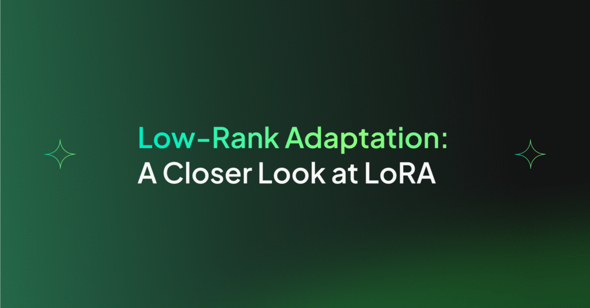

Real-time Analytics
Real-time Analytics Dashboard
Interactive visualization platform processing billions of events daily, providing actionable insights for enterprise decision-making through advanced data aggregation and stream processing.
Key Features
- Real-time Streaming: Kafka-based event ingestion with sub-second latency for live dashboards
- Multi-tenant Architecture: Isolated data processing per client while sharing compute infrastructure
- Customizable Visualizations: Drag-and-drop UI builder for analysts to create their own charts and reports
- Alert System: ML-powered anomaly detection triggering automatic alerts on threshold breaches
Architecture Overview
# Event processing pipeline structure
def process_stream(event_batch):
# Filter and enrich incoming events
filtered = filter_relevant_events(event_batch)
# Aggregate by time window
metrics = aggregate_metrics(
batch=filtered,
window='1h',
dimensions=['user_id', 'region']
)
# Alert on anomalies if needed
anomalies = detect_anomalies(metrics)
return {
'metrics': metrics,
'alerts': anomalies
}Tech Stack Used
Python
FastAPI
React
PostgreSQL
Kafka
Metric Achievements
- Data Volume: Processed 50M+ events per hour consistently
- Latency: P99 query time under 200ms for live dashboards
- Uptime: 99.9% availability with automatic failover